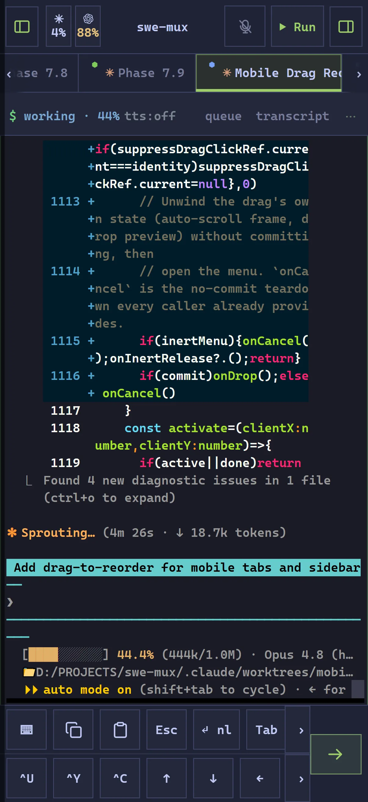
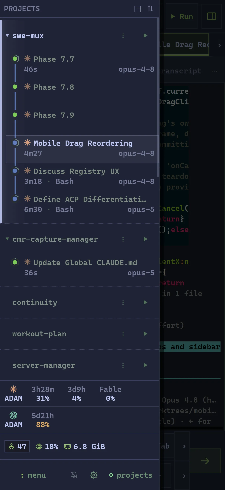
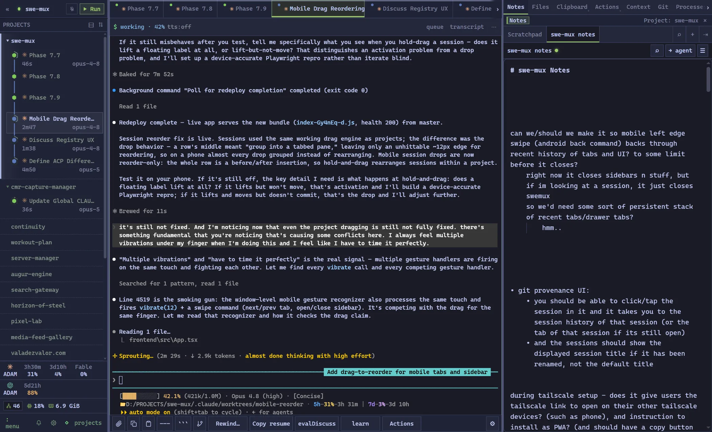
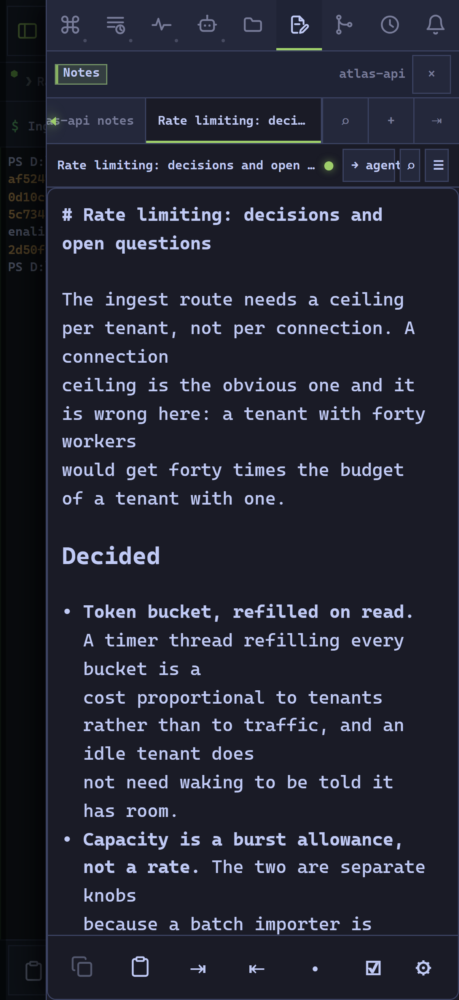
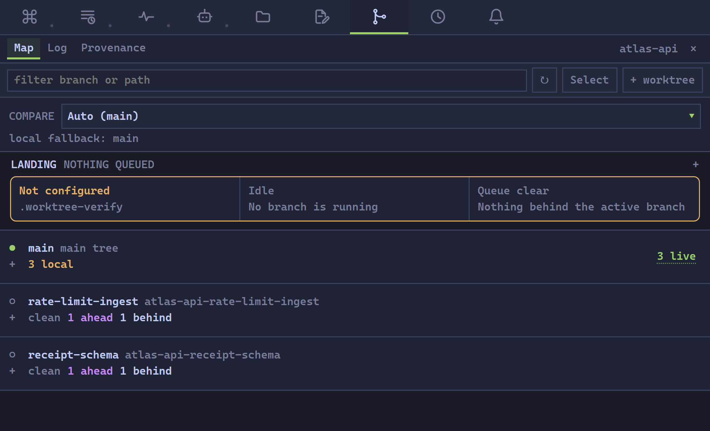
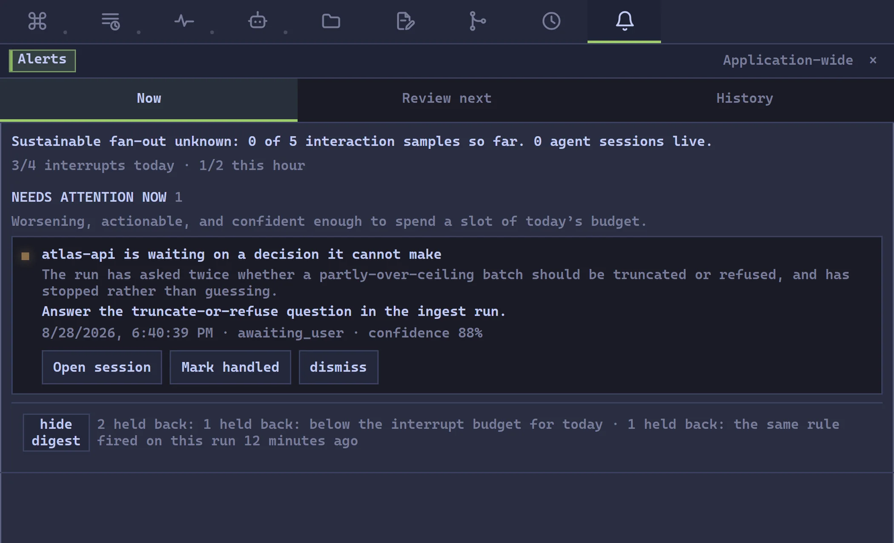
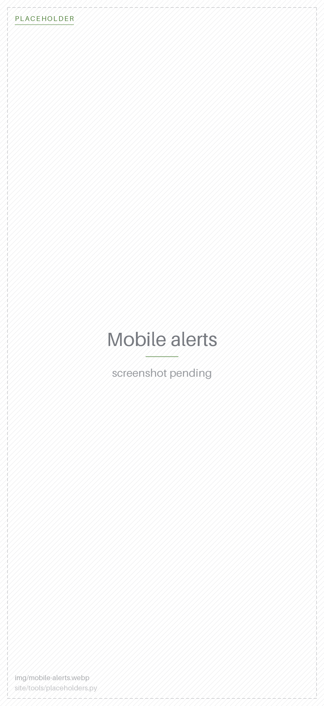

For developers running multiple coding agents locally,
swe-mux shows what each agent actually did
and lands finished branches behind checks you approved.
Evidence taken from the work, not from the agent's account of it.
Your harness does the work. swe-mux is the record and the gate around it: every file write hashed on the bytes actually written, every commit attributed to the session and conversation that produced it, and finished worktree branches landed one at a time behind a verification command you approved. It sits beside the agents rather than in front of them, so whatever your CLI ships next already works here, and what the record measures does not change when the agents do.
uv tool install swe-mux
Isolated environment, and mux, muxd,
swe-mux on your PATH globally. No desktop shortcut - no Python install makes one.
On Windows, uv tool install "swe-mux[desktop]" adds the native window and the
tray.

The workbench
Sessions, panes, tabs, notes, files, git, previews, a Run menu you define. Everything you look at.
The split tree: one Project containing a recursive pane layout, each leaf holding a tab stack with mixed tab kinds (terminal, note, preview, queue), and the same tree flattened into the single mobile rail beside it.
The control plane
Deterministic evidence, model-free detectors, incident ranking, an interrupt budget, and a return path agents can read. Decides what you look at.
The escalating-cost stack: raw facts at the base (free), detectors above them (free), the budgeted model layer above that (capped), attention routing at the top, and a single gate marked "human" on every arrow that leaves the stack toward a session.
The second half is only buildable because of the first. You cannot measure a fleet whose terminals, shells, and input telemetry you do not own.
The whole workspace, on your phone
Live terminals, git review, the Markdown editor, the file tree, the queue, previews, the Run menu, drag reorder, lock-screen push. No feature exists on the desktop and not on the phone. The only desktop-only things left are hidden terminal pre-warming, the collapsed sidebar rail, and keyboard chords a phone cannot produce. Every other orchestrator's phone client is a monitor, and their own pages call them companions. This one is the machine.
- The actual terminal. Not a rendered chat log. The real TUI, with the diff colours, the picker, and the approval prompt exactly as the CLI drew them.
- One session, several devices, exactly one writer. Input ownership is arbitrated and the size is negotiated, so the desktop does not fight the phone over the same PTY.
- A projection, not a second layout. The phone flattens the same workspace tree into one rail. There is no separate mobile build to drift.
- Your dev server, on your phone. A listener a session owns is proxied
through swe-mux's own URL, so you open
127.0.0.1:5173from the couch with no port exposed anywhere. - Built for touch, not shrunk for it. Long-press drag reorder, a touch key rail, sticky read mode, and a keyboard that stays down until you ask for it.
- No relay. It reaches your machine over your own tailnet, and there is no swe-mux login and no backend this project operates. What the phone talks to is the same local daemon your desktop browser talks to.
Git review on a phone: changed-file rows with added and removed counts, one file expanded to a diff. Proves review is not desktop-only.
A dev-server preview tab rendering a local site over the tailnet, with the terminal tab still in the rail beside it.
Know which agent needs you
Every session carries a state you can trust: working, ready, awaiting approval, or blocked. It is derived from provider hooks first, then the transcript, then the PTY, then the CLI's own reported state, and every transition is written to a durable ledger with the layer readings that produced it. When a status looks wrong you can go read exactly why it changed, hours later. A watchdog catches sessions that stopped reporting, and the sidebar rolls the whole fleet up so a collapsed group still shows the strongest state it is hiding.

Sessions that outlive the app itself
Every terminal is a pseudoterminal held by a supervisor process that is separate from the daemon and separate from the UI. Close the browser, restart the daemon, rebuild and redeploy the entire desktop application, and the agents keep working. The next daemon rediscovers the supervisor, reattaches every live session, and rebuilds it from mirrored metadata plus a scrollback snapshot. Reconnecting a terminal replays only the bytes you missed rather than resetting the screen, so a phone that slept through a long turn comes back to an intact buffer.
A supervisor cannot survive its own death, and that is the honest edge of the claim: a supervisor crash, a force close, or a power loss takes the processes with it. Cold session recovery is the layer behind that - a durable registry plus terminal checkpoints bring those sessions back as readable, resumable rows carrying what they last printed, rather than letting them vanish from the sidebar as though they had never run.
A phone reattaching after sleep, scrollback intact above the current turn.
The workbench
One Project is one folder you register. It owns its sessions, layout, notes,
files, and history for their whole lifetime, and a terminal that wanders elsewhere with
cd never changes who owns it.
- Mixed workspaceA recursive split tree where every leaf holds its own tab stack. A tab is a terminal, a note, a file, a dev-server preview, a transcript, history, or a queue. Panes and tabs are viewports, so closing one never kills a process or deletes a file.
- Promotion in placeNo backend picker. Type
claudein a plain shell and the session promotes where it stands: same pane, same scrollback, now carrying a transcript, a status, a queue, and a context meter. - Utility drawerNotes, Files, Clipboard, Actions, Context, Git, Processes, Queue, Transcript, Insight, Agent, and Alerts. Session-scoped tabs follow whichever session has focus; the drawer itself is a recursive layout you arrange per device.
- A Run menu you defineImports your existing
tasks.json, rootpackage.jsonscripts, and its ownactions.toml. Nothing runs until you approve that file's exact bytes, and any edit revokes the approval. - Prompt queueStage ordered messages against a conversation while it is mid-turn. Durable across restarts, strict head-of-line, bound to the first run so a cleared conversation strands the queue visibly instead of firing into a stranger.
- Previews without exposed portsA loopback listener a session owns becomes a Preview tab, proxied through swe-mux's own URL. HTTP and websocket traffic both, so hot reload works from a phone.
- AttachmentsDrop files and images straight into a session. They land in the workspace, gitignored, and stay there after the session ends.
- Worktrees, atomicallyCreate the worktree, run your setup command, and start a session in its exact root as one operation. Worktrees stay git artifacts and never become sidebar rows.
- Clipboard historyA searchable ring of everything you copied, with pins. Memory-only by default, secret-shaped copies refused before an entry exists.
- Broadcast and railsSend one input to several sessions. Build your own action rails per device, with agent skills and slash commands discovered from the CLIs themselves.
Every harness, and every shell
This is a terminal multiplexer before it is anything else. Anything that runs in a terminal runs here, unchanged. PowerShell, CMD, Git Bash, WSL, bash, zsh, vim, lazygit, htop, a TUI you wrote yourself, an agent CLI that shipped this morning and has never heard of swe-mux. Real pseudoterminals, real signals, real Unicode widths, real bracketed paste. A harness swe-mux does not recognize still works perfectly; you simply do not get the layer on top of it.
For the harnesses it does know, that layer normalizes what every vendor invents separately. Adding another is a descriptor and an adapter, not a branch through every feature, which is why the list keeps growing.
- InputNewline, submit, paste, copy, and caret placement behave the same in every CLI. Each harness's measured composer quirks live in one resolver instead of being relearned by your fingers.
- StatusOne vocabulary across vendors: working, ready, awaiting approval, blocked. Derived from hooks, then transcript, then PTY, then the CLI's own state.
- TranscriptsOne reader over every conversation format, including the store-backed ones that are not files at all.
- HistoryOne search box over every conversation any supported harness has ever written on this machine. Full text across prompts and replies, and resume back into any of them.
- AccountsOne switcher and one quota view across providers. Saved accounts, one-click login swap, per-account reset windows, and usage that survives the switch.
- EventsOne lifecycle stream regardless of harness, so hooks, sounds, push, and the detectors all consume the same normalized shape.
- Launch profilesPer-harness and per-shell launch definitions with your own arguments, environment, and working directory, resolved per Project.
Native transcripts are never moved, rewritten, or deleted. The searchable copy is a local derivative you can throw away and rebuild.
Notes that are a real editor
A proper WYSIWYG Markdown editor, built in house, not a textarea and not a preview pane bolted to one. Headings, lists, tables, code blocks, chords, outline navigation, find, and a formatting rail that works with a soft keyboard up. Every note is an ordinary Markdown file in your Project, written with revision checks so two devices cannot clobber each other, and gitignored by default. Select a passage and send it straight to an agent, or have an agent write into the same file and watch it update. There is a global scratchpad too, deliberately outside any Project, because its whole job is to survive switching between them.


Git that knows which agent did it
Branch, HEAD, dirty count, upstream divergence, and lines changed against a comparison ref you choose per Project, polled read-only so a status check never takes a lock in a repository your agents are working in. Review changed files and annotate a diff line by line, then send the comments back to the agent that wrote them. And every commit carries durable provenance: which session and which conversation produced it, split into committer and contributor, with a confidence level and the files each contributor's writes account for.

The review modal on a phone: changed-file rows with counts, one expanded to a diff.
Drive it without touching it
Voice activity detection in the browser and speech-to-text that decodes on
your own machine in both shipped configurations: faster-whisper by default (the
voice-local extra, whose models download once from Hugging Face and then run
offline), or Windows Speech Recognition. There is no cloud speech path and no browser
speech-recognition fallback - without an engine, transcription returns a typed error rather
than sending audio anywhere. Dictate a prompt across natural pauses and send it. Navigate by
spoken coordinate, ask the fleet for status, approve a prompt, interrupt a run. Read aloud and
hands-free conversation are each off until you turn them on.
Push notifications reach your lock screen, routed to the device you are actually at. They are raised from normalized lifecycle events - a root turn completing, a session going ready, an approval or question, a failure, a confirmed unexpected quota reset - rather than from terminal activity, and three rules hold back the ones not worth interrupting for: a turn that ended while background work is still running, a session merely settling after startup, and a "ready" that has not stabilized. That is a good deal better than a spinner, and it is not the same claim as never being wrong: the detector reads several layers, has explicit unknown states, and resolves ambiguity to the conservative prior rather than to a guess.
The voice overlay attached to a focused pane: the live transcript draft, the named target session, and the wake-word indicator mid-listen.
An Android lock-screen notification from swe-mux naming the session and its reason, beside the phone's voice overlay with a draft staged.
The control plane
The agent CLIs are the data plane; they do the work. This layer observes, records, and routes attention without ever sitting in an agent's execution path. It never types, approves, spawns, or edits anything, and every write path ends at a human pressing something. Cost escalates one layer at a time: capture and detection are deterministic and spend nothing, a model is reached for only at the last mile and under a hard cap.
And nothing here runs until you switch it on, per Project. Every automation below ships off, with one exception - a permission gate that reads nothing, runs nothing, and spends nothing on its own. The land queue needs four separate things before an agent can trigger one: the install-wide switch, the Project's opt-in, an authority level raised from its default of "a human approves the request", and a verification command whose exact bytes you approved. The model-backed pieces - the behaviour timeline, the attention observers, the assistant - are off too. That is deliberate, and it means the screenshots below are of a configured install rather than a fresh one.
- Tier 0 factsEvery file write hashed on the exact bytes written, every command with its exit class, test output parsed down to the failing set, git operations, tool calls. Each fact keeps a pointer back to the moment it happened.
- Git provenanceCommits attributed to the session and conversation that produced them, committer against contributor, with confidence and the changed files each one accounts for.
- Operational telemetryDurable process, quota, reset, compaction, and tool evidence, plus a status timeline you can query by time range long after the incident.
- Model-free detectorsLoops with a no-progress gate, work declared done that never ran a test, documentation debt, and provenance edges. Annotations only, with the full set of facts each finding rests on attached.
- Code graphBlast radius, test gaps, dead code, import cycles, and a per-session change map. Tree-sitter parsing, not a language model.
- Fleet faultsSessions that stopped reporting, conversations two sessions both claim, transcripts that went stale underneath a running agent.
- Behavior timelineA cheap model reads the conversation forward and extracts structured records, including the dead ends. Three separate gates, daily and hourly and per-run budgets, and it writes nothing at all rather than guess when the response fails validation.
- Attention rankingFindings merge into incidents and route to one of four channels by what they cost you to resolve. A hard daily interrupt budget with an hourly burst limit. Held-back items stay counted and visible with the reason they were suppressed, because a hidden item is indistinguishable from a broken detector.
- NarrationOne budgeted call explaining why an incident ranked, drawn as an aside beneath the deterministic summary and never in place of it.
- An MCP endpoint per sessionRegistered at spawn. Agents read sibling status, run briefs, transcripts, history, Project notes, and Agent Context sources, scoped to their own Project by default and widened only when asked.
- Cross-session memoryWhat a previous session already resolved, what it verified, and what it tried and abandoned. A new agent can find the dead end instead of walking into it.
- Bounded writesMessage another session, request a spawn, interrupt, or end a run. Every one of them waits for a human by default, and refusals are typed rather than silent.


Also in the box
- Process ownershipAttribution by PID plus creation time, unioned with job-object membership, so a detached grandchild is still yours. Find the dev server from Tuesday that is still holding the port, and the headless browser windows nothing else can see.
- Agent environmentWhat skills, MCP servers, hooks, plugins, and policies this CLI is actually running right now, and whether any of it has drifted since it started. Read-only, and it never prints a hook's command line.
- Agent contextWhich instruction files the agent actually loads, with reversible, revision-guarded sync across harnesses so your instruction files stop disagreeing with each other.
- History and resumeEvery conversation, including the ones a
/clearretired, searchable and resumable. A held-conversation marker replaces Resume when a live process still owns the row. - Remote accessYour tailnet only. No swe-mux login, no port forwarding, no Funnel, no relay. Optional HTTPS for the microphone and clipboard APIs that demand a secure context.
- Usage analyticsCost and token history by source, model, and tool, with quota windows and reset tracking per saved account.
- DiagnosticsSupervised background loops with per-loop cost accounting, event-loop lag sampling, a durable state log, and
mux doctorto export the whole picture. - Prompt libraryReusable templates, Project and global, inert until you insert one. Selection never submits.
- Small thingsThemes, per-device UI scale, configurable session rows, command palette, network accounting, device presence, guided onboarding, QR pairing for a phone.
Install
At least one agent CLI already installed and logged in. swe-mux does not install, manage, or proxy the agent CLIs. It runs the ones you already have, on the subscription you already pay for.
There is no downloadable build yet. The Windows installer is produced by the release workflow, and this section is drawn from the same release manifest the app's own update check reads, so it appears here by itself on the first release that carries one.
Until then the Python install below is the whole product, and on Windows
swe-mux[desktop] is the same native window and tray icon the installer will
set up for you.
From PyPI
Python 3.12 or newer.
$ uv tool install swe-mux # isolated env; mux, muxd, swe-mux on PATH $ mux doctor # read-only health report $ muxd # daemon on 127.0.0.1:8765
Open 127.0.0.1:8765 in a browser and register a Project folder.
Nothing spawns until you ask. pipx install swe-mux is the same isolated, on-PATH
install without uv.
No Python install of any kind creates a desktop shortcut or a Start Menu entry. Wheels have no post-install hook and pip runs no install-time code, so that is structural rather than a step somebody forgot: start swe-mux from a terminal.
On Windows, take the desktop extra - uv tool install
"swe-mux[desktop]" - which adds the native window and the tray icon, and wants the
WebView2 Runtime. Without it you still get a swe-mux command, and it fails on a
missing import rather than opening a window. The extra is declared Windows-only, so on Linux and
macOS it resolves to nothing and the daemon plus a browser is the whole product.
pip install swe-mux is a different act. It installs into
whichever environment is active and puts nothing on PATH globally, so mux works
only inside that environment. pip usually says so in a WARNING: The scripts ... are
installed in '...' which is not on PATH that scrolls past unread. If that is where you
are:
$ python -m swe_mux # the daemon, no PATH setup at all: this is muxd $ python -c "import sysconfig; print(sysconfig.get_path('scripts'))" # where the three executables went $ pip show -f swe-mux # every file this install wrote
From source
$ git clone https://github.com/jatoran/swe-mux $ cd swe-mux $ uv sync --extra desktop $ npm --prefix frontend ci && npm --prefix frontend run build # only the source flow needs Node $ uv run --extra desktop swe-mux
Only the source flow needs Node: the frontend build output is gitignored, so a fresh clone serves the API and no interface until that build runs once. A published wheel carries the built frontend already.
The wheel is pure Python, and CI builds and install-smokes it on Windows, Linux, and macOS on every push. What no CI job does anywhere is start the daemon - Windows is the platform that proves this thing running, and the macOS leg is not yet required to pass.
Upgrading, uninstalling, what an uninstall leaves behind, and what to do when the daemon will not start: OPERATOR_LIFECYCLE.md.